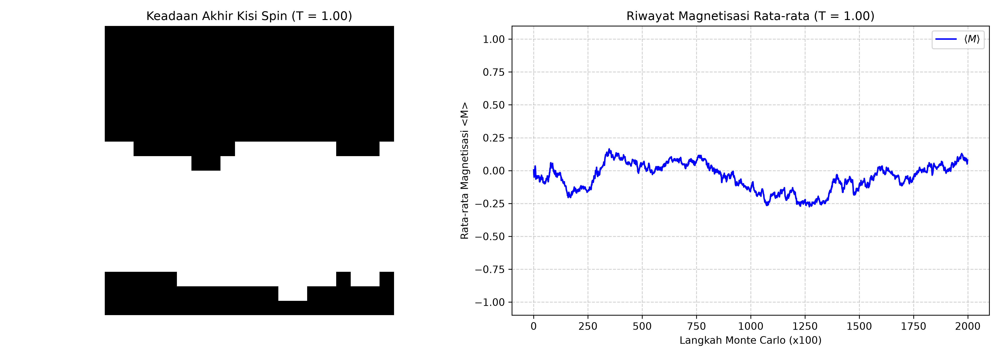

Simulasi Model Ising 2D via Algoritma Metropolis
Tugas Studi Kasus Komprehensif - Eksplorasi Transisi Fasa dan Magnetisasi Spontan.
Kasus 1: Fase Feromagnetik (Suhu Rendah, T = 1.00)
Kondisi Termodinamika: Sistem disimulasikan di bawah suhu kritis menggunakan konfigurasi awal acak (Hot Start) dengan ukuran kisi 20x20 sepanjang 200.000 langkah Monte Carlo.
Visualisasi Output 2D & Kurva Magnetisasi

Interpretasi Fisis Ilmiah
- Penyelarasan Spontan: Walaupun sistem diinisialisasi dari keadaan acak total (Hot Start), interaksi pertukaran feromagnetik ($J > 0$) mendominasi jalannya simulasi karena energi eksitasi termal dari lingkungan sangat kecil ($T = 1.0 < T_c$).
- Pembentukan Domain Homogen: Keadaan akhir kisi spin secara visual didominasi oleh penyearahan orientasi spin secara spontan untuk meminimalkan energi bebas sistem.
- Nilai Magnetisasi: Kurva riwayat magnetisasi rata-rata menunjukkan peningkatan tajam dari menuju nilai mutlak mendekati satu, menandakan keberhasilan sistem dalam mencapai fase kesetimbangan feromagnetik teratur.
Atribusi & Penggunaan Alat
Pada pengerjaan ini, kami menggunakan Gemini untuk mendesain struktur optimasi logika kode, serta lingkungan GitHub Codespaces sebagai media komputasi awan interaktif.